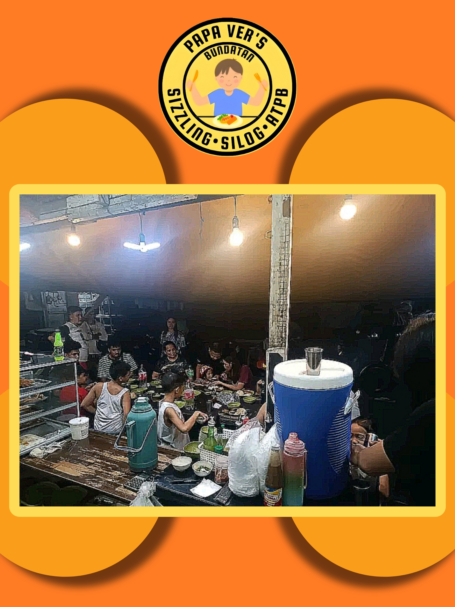
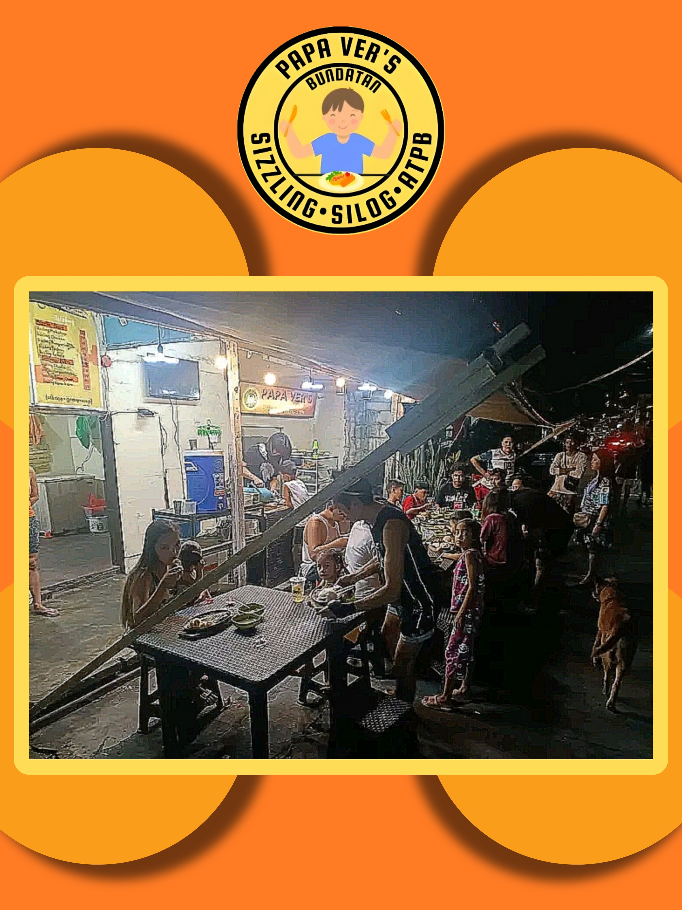
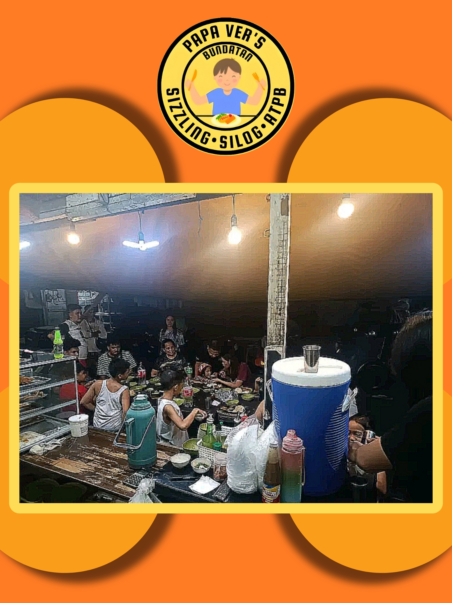
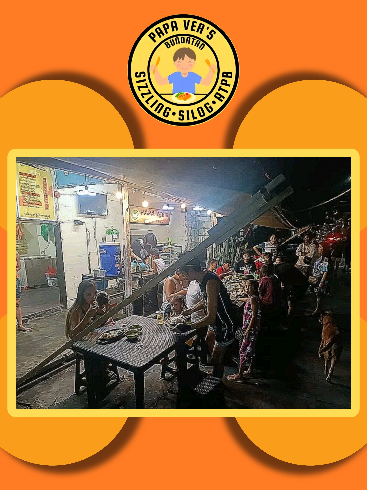

x
ABOUT US
CONTACT US
FIND US
x
ABOUT US
CONTACT US
FIND US
 




In the realm of fast food, Papa Ver's Bundatan stands out by offering quick, convenient meals without compromising on quality. Our efficient service ensures you get delicious dishes promptly, made with the freshest ingredients for a satisfying dining experience on the go.
Service quality at Papa Ver's Bundatan is paramount. Our attentive staff ensures that every guest feels welcomed and well taken care of from the moment they step in. With a friendly demeanor and swift service, we strive to exceed expectations, making every visit memorable and enjoyable.